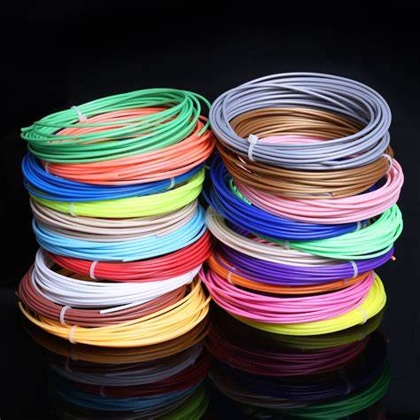
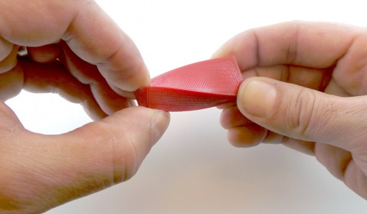
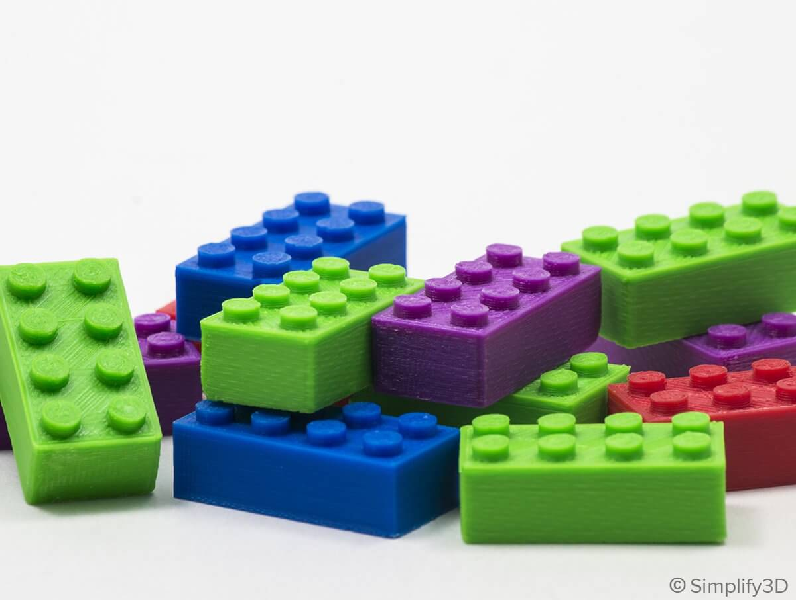

PLA
El PLA, también llamado ácido poliláctico, se deriva de materias primas naturales y renovables, como el maíz, y pertenece a los poliésteres como un polímero sintético.
El PLA es un material muy estable, y por esto es bastante resistente a los químicos como las acetonas o alcoholes. Para disolver el PLA hacen falta disolventes muy potentes como el diclorometano, así que los productos químicos del día a día no harán mella en el PLA.
Es una de las opciones sostenibles que el sector de los termoplásticos utiliza para combatir los problemas ambientales que el plástico genera. Los polímeros son esenciales en nuestro día a día y gira, en torno a ellos, una gran cantidad de industria.
FLEX
El plástico FLEX es un material flexible, de propiedades similares a la silicona sólida, popular en el campo del modelado 3D.
Con una dureza de Shore 98 A, una elevada resistencia a la temperatura y la abrasión, soporta 115º, por lo que es ideal para la automoción. Con este material se pueden hacer juntas flexibles, pomos, retenes, fuelles, bisagras…
ABS
El acrilonitrilo butadieno estireno (ABS) es un polímero amorfo procedente de la emulsión o polimerización en masa de acrilonitrilo y estireno en presencia de polibutadieno. Las propiedades más importantes del ABS son la resistencia a los impactos y su dureza.
Entre sus propiedades destacan su rigidez, dureza y tenacidad, lo que le confiere una gran estabilidad y resistencia a impactos o vibraciones, incluso a bajas temperaturas. Todas estas propiedades lo convierten en un plástico muy utilizado en diferentes sectores.